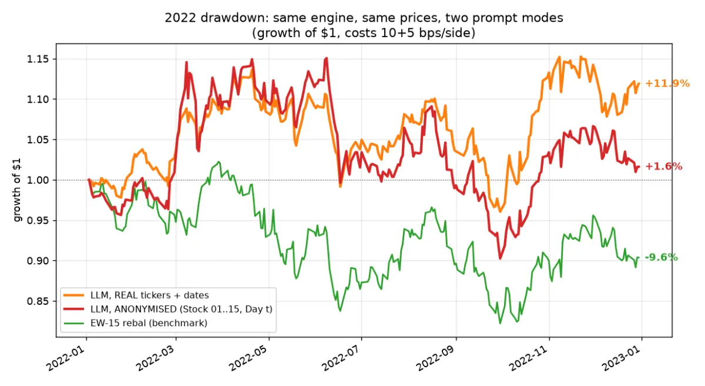

Draft. Highlighted [TBC] notes are for Darren to fill in or cut before this goes live.
Does the AI forecast the market, or remember it?
Same model, same prices, same engine. Only the labels changed: +11.9% became +1.6%.

I wanted to know whether a language model could trade. So I built a backtester that is strict about time: the agent decides at the close of day t and trades at the open of day t+1, with costs of 15 basis points per side. Two kinds of tests check that it cannot see the future, including one that multiplies every later price by 1.5 and asserts that nothing decided earlier changes.
Then I gave Gemini real ticker symbols and real dates, and it looked like a good discretionary manager. Through 2022 it avoided tech, sat in energy, and finished +11.9% while equal-weight buy and hold lost 9.6%.
The experiment
An engine that cannot leak prices does not stop the model leaking itself. A language model has read about 2022. So I ran the same engine, the same prices and the same seed twice, changing only the prompt: once with XOM, 2022-06-13, once with Stock 07, Day t and prices rebased to 100.
The anonymised run returned +1.6%. On one frozen date, the Monday of the June selloff, the real-ticker version went to 100% cash in all eight of eight repeat calls, while the anonymised version was fully invested in all eight. The prompt never mentioned sectors, yet in the real-ticker rationales the word “energy” or “oil” appeared 72 times in 104 decisions, and never in the anonymised ones.
What it does not show
With the leak controlled, over 2019–2026 the agent is a high-turnover momentum chaser. It returns 20.4% a year at a Sharpe ratio of 1.04, against 22.7% and 1.23 for plain monthly-rebalanced equal weight, and it pays 3.5 percentage points a year in costs at 9.4 times annual turnover. The negative result is the one I can defend.
The caveats are in the write-up and I will repeat them here: the 15 stocks were chosen in 2026, so every absolute return is flattered by survivorship, and the evidence is behavioural. It shows that world knowledge changed the decisions. It does not show the model memorised price paths. [TBC: Darren: confirm the repository is public before this goes live, and add one line on what made you try anonymising in the first place.]
The lesson I took away is practical. If a backtest of a language model uses real names and dates, treat its number as an upper bound.